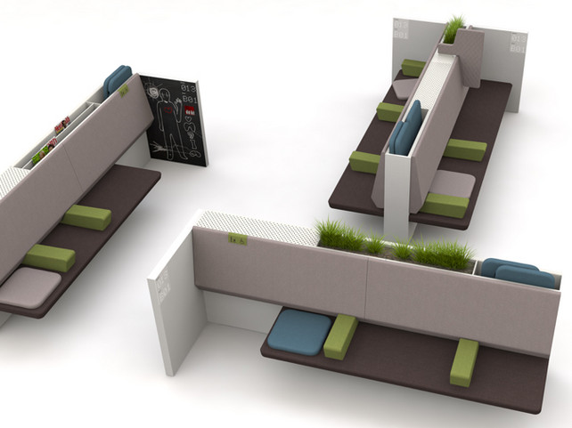

How Firm is Your
How Firm is Your
Node.JS Foundation?
Tim Caswell
June 1, 2012
The Core Tools
- State: Objects and Closures
- Control: Callbacks and Streams
- Organization: Interface Oriented Modules
- I/O: Non-Blocking
- Network (UDP, TCP, HTTP)
- Disk
I/O Latency Compared
| Access | CPU Cycles | Analogy | Time |
|---|---|---|---|
| L1 | 3 | Grab a piece of paper from your desk | 3 seconds |
| L2 | 14 | Pick up a book from a nearby shelf | 14 seconds |
| RAM | 250 | Take a walk down the hall to buy a Twix bar | 4 minutes |
| DISK | 41,000,000 | Leave the building and roam the earth | 15 months |
| NETWORK | 240,000,000 | Invest in Facebook, wait for them to IPO | 8 years |
Source: Gustavo Duarte
Waiting Rooms - An Analogy

What if node was modeled after CGI and used blocking I/O?
Pros to blocking CGi style
- Simple: You can assume it's an HTTP request.
- Clear: Write tasks using simple, linear logic.
- Familiarity: It's how 99% of the web frameworks in the world work. No need to learn something new.
Cons to blocking CGI style
- It's not flexible at all.
- How do I set the HTTP port?
- What interface does it bind to?
- What if I want two HTTP servers in the same process?
- How do I persist data between requests?
- What about parallel or slow clients?
- They would either have to be served one at a time. (slow)
- Or spawn a thread or process for every client. (expensive)
- What about parallel work? (reading from disk while querying the database)
What node code really looks like
What node code really looks like (cont.)
State - Or Remembering Who You Are
In any node program there is the concept of state. It's useful for remembering where you were when an event comes in.
JavaScript has objects that are used for storing internal state in named properties accessible via this.
Here is the same example using the common constructor + prototype method.
// A constructor is simply a function that's meant to be called with `new`
function Person(name, race, hitPoints) {
this.name = name;
this.race = race;
this.hitPoints = hitPoints;
}
// Add a shared method to the constructor's object prototype
Person.prototype.getDescription = function () {
return this.name + " the " + this.race + " has " + this.hitPoints + " hitpoints.";
}
// Create a new instance of the Person class.
var obj = new Person("Tim", "human", 42);
// Call the `getDescription` method of this class instance.
var description = obj.getDescription();
The problem is registering a callback usually doesn't preserve the intended this value.
function Person(name) {
this.name = name;
}
Person.prototype.greet = function () {
console.log(this.name + " says hi!");
};
var tim = new Person("Tim");
// Tell tim to greet us now
tim.greet(); // -> Tim says hi!
// Tell tim to greet us in 500ms
setTimeout(tim.greet, 500); // -> undefined says hi!
Why did this not work?
Slide with bullet points and a longer title, just because we can make it longer
- Use this template to create your presentation
- Use the provided color palette, box and arrow graphics, and chart styles
- Instructions are provided to assist you in using this presentation template effectively
- At all times strive to maintain Google's corporate look and feel
Slide with bullet points that builds
- This is an example of a list
- The list items fade in
- Last one!
Any element with child nodes can build.
It doesn't have to be a list.
Slide with bullet points (small font)
- Use this template to create your presentation
- Use the provided color palette, box and arrow graphics, and chart styles
- Instructions are provided to assist you in using this presentation template effectively
- At all times strive to maintain Google's corporate look and feel
Slide with a table
| Name | Occupation |
|---|---|
| Luke Mahé | V.P. of Keepin’ It Real |
| Marcin Wichary | The Michael Bay of Doodles |
Slide with a table (smaller text)
| Name | Occupation |
|---|---|
| Luke Mahé | V.P. of Keepin’ It Real |
| Marcin Wichary | The Michael Bay of Doodles |
Styles
- class="red"
- class="blue"
- class="green"
- class="yellow"
- class="black"
- class="white"
- bold and italic
Segue slide
Slide with an image

Source: Sergey Brin
Slide with an image (centered)
Source: Larry Page
Image filling the slide (with optional header)

Source: Eric Schmidt
This slide has some code
<script type='text/javascript'>
// Say hello world until the user starts questioning
// the meaningfulness of their existence.
function helloWorld(world) {
for (var i = 42; --i >= 0;) {
alert('Hello ' + String(world));
}
}
</script>
<style>
p { color: pink }
b { color: blue }
u { color: 'umber' }
</style>
This slide has some code (small font)
<script type='text/javascript'>
// Say hello world until the user starts questioning
// the meaningfulness of their existence.
function helloWorld(world) {
for (var i = 42; --i >= 0;) {
alert('Hello ' + String(world));
}
}
</script>
<style>
p { color: pink }
b { color: blue }
u { color: 'umber' }
</style>
The best way to predict the future is to invent it.
A distributed system is one in which the failure of a computer you didn’t even know existed can render your own computer unusable.